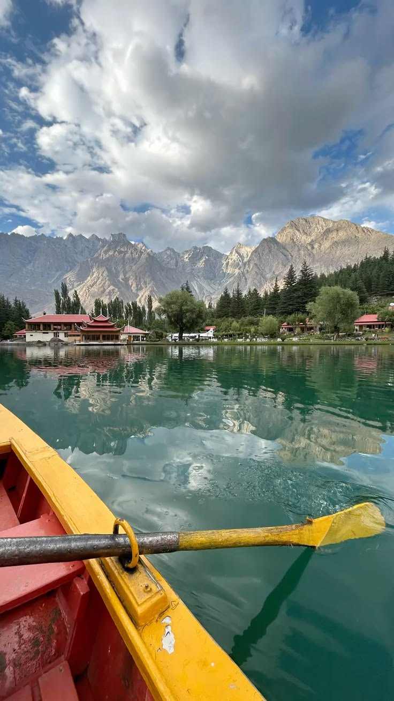
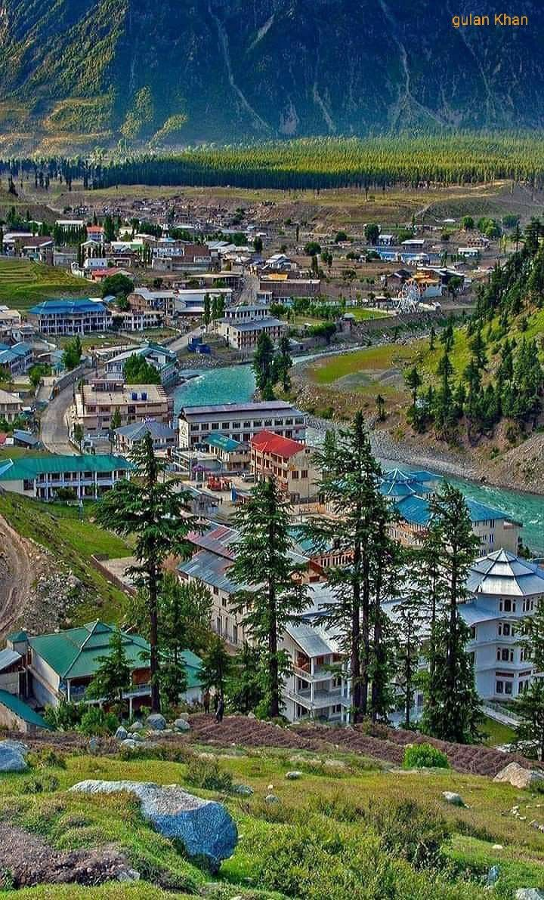
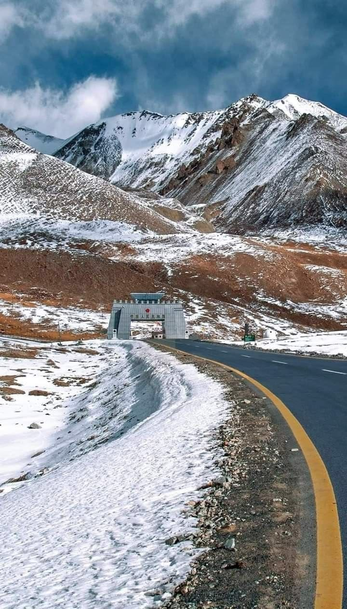

HUNZA VALLEY
WELL TO HUNZA VALLEY a breathtaking tourist destination in Pakistan it is famouse for its snowny mountainous BEAUTIFULL LANDSCAPE and peacefull enviroment


WELL TO HUNZA VALLEY a breathtaking tourist destination in Pakistan it is famouse for its snowny mountainous BEAUTIFULL LANDSCAPE and peacefull enviroment
The Hunza Valley, located in the Gilgit-Baltistan region of Pakistan, is a stunning mountainous region renowned for its breathtaking scenery, high literacy rates, and long-lived, hospitable people. Nestled in the Karakoram range, this former principality is surrounded by7,000m+ peaks like Ladyfinger and Rakaposhi, alongside massive glaciers such as Passu and Batura. Key attractions include the 800-year-old Baltit and Altit Forts, the vibrant blue Attabad Lake, and stunning sunset views from Duikar. Culturally, it is rich with traditions, traditional music, and famous for organic food, particularly apricot
A TRUE HEAVEN ON EARTH




mountain Snow Coverd Peaks
Culture Rich traditions
Food traditions local dishes
Nature rivers and vallay
PEACEFULL enviroment
FRESH AIR
BEAUTIFUL LANDSCAPE